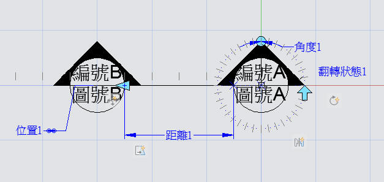

論壇中有朋友提及動態圖塊(2006版本新增)的作法，論壇是有一些標準的製作過程分享~
利用這個機會分享關於 旋轉參數、翻轉參數、線性參數(拉伸)及定義增量 等方式!
有興趣的朋友可以參與練習，並且可以有效使用動態圖塊來提升繪圖效率!
旋轉參數、翻轉參數、線性參數(拉伸)及定義增量範例:

2011版練習範例影片展示：
補充：
2006版練習範例影片展示：
請記得說明以下事項(參與練習的朋友將獲得 威望值+6):
1.PO上範例完成影片
PS:若無法po影片可將DWG圖檔上傳(供測試檢核)
2.範例所用到的指令(約略說明即可)
3.使用的AutoCAD版本
4.範例所需時間
5.您的意見補充
一、旋轉參數範例步驟：
二、翻轉參數範例步驟：
三、線性參數(拉伸)範例步驟：
四、定義增量範例步驟：
相關延伸閱讀文章:
AutoCAD 2D 動態圖塊入門
https://www.autocad-tw.com/t4879-topic
[分享]動態圖塊-圖塊表格運用
https://www.autocad-tw.com/t5948-topic
[教學]動態圖塊
https://www.autocad-tw.com/t888-topic
[教學]動態圖塊-可見性參數(初級會員:積分1)